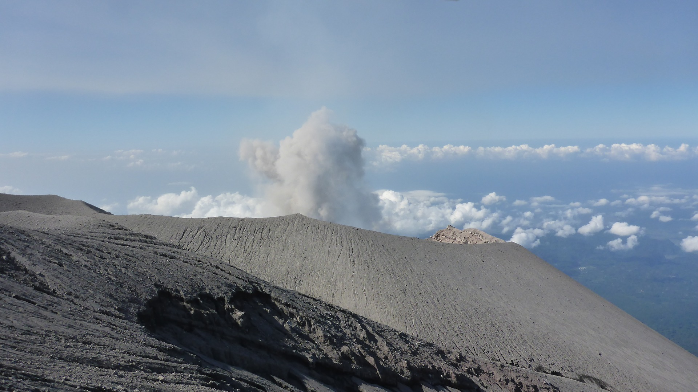

Gunung Semeru merupakan gunung tertinggi di Pulau Jawa digunung ini juga terdapat danau yang terkenal Ranu Kumbolo tempat favorit para pendaki berkemah atau bermalam setelah perjalan jauh. untuk biaya nya wisatawan domestik di kenakakan biaya sebesar Rp 17.500/orang hari biasa dan Rp 22.500/orang hari libur, untuk wisatawan mancanegara di kenakan biaya sebesar Rp 210.000/orang hari biasa dan Rp 310.000/orang hari libur